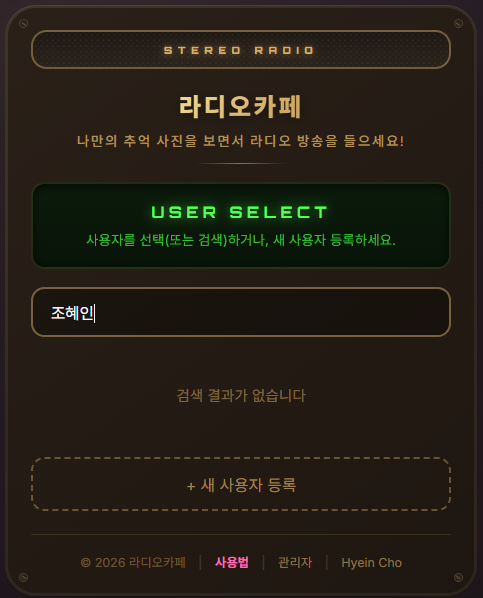
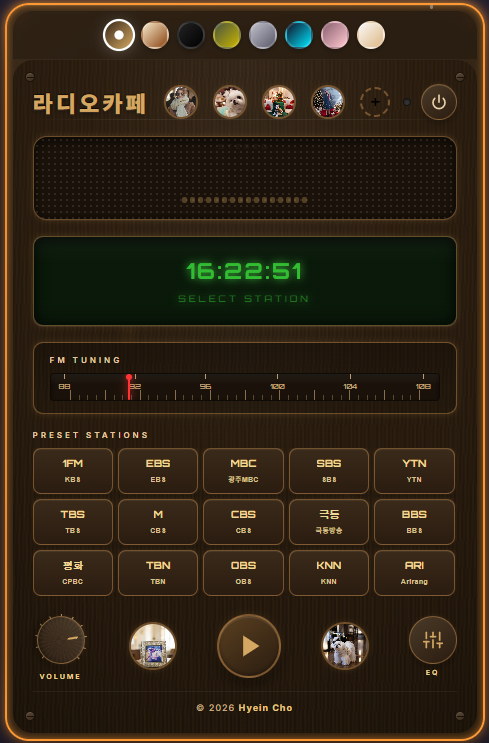
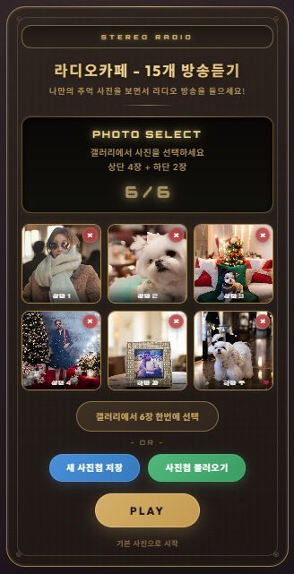

USER MANUAL
📻
사용법
라디오카페 이용 가이드
PDF
시작하기
1
로그인
기존 사용자를 선택하거나 새 사용자로 등록하세요. 비밀번호는 숫자 4자리입니다.

1
2
3
4
로그인 화면
1
USER SELECT - 사용자를 선택(또는 검색)하거나, 새 사용자 등록 안내
2
사용자 검색 - 이름을 입력하여 사용자를 검색합니다
3
검색 결과 - 검색된 사용자 목록이 표시됩니다
4
새 사용자 등록 - 새로운 사용자로 등록합니다

1
2
3
4
5
6
7
라디오카페 메인 화면
1
배경색 선택 - 원하는 배경 테마 색상을 선택합니다
2
사진 슬롯 - 선택한 6장의 사진이 표시됩니다 (클릭하면 크게 보기)
3
전원 버튼 - 로그아웃합니다
4
LCD 디스플레이 - 현재 시간과 선택한 방송국이 표시됩니다
5
FM 튜닝 다이얼 - 드래그하여 주파수를 조절합니다
6
프리셋 방송국 - 원하는 라디오 방송국을 선택합니다
7
컨트롤 - 볼륨 조절, 재생/정지, EQ 설정
사진첩 기능

1
2
3
4
5
6
7
사진 선택 화면
1
안내 영역 - 사진 선택 방법을 안내합니다 (상단 4장 + 하단 2장)
2
사진 슬롯 - 선택한 6장의 사진 미리보기가 표시됩니다
3
갤러리에서 6장 한번에 선택 - 한번에 여러 장을 선택할 수 있습니다
4
사진선택 초기화 - 선택한 사진을 모두 초기화합니다
5
새 사진첩 저장 - 현재 사진들을 새 사진첩으로 저장합니다
6
사진첩 불러오기 - 저장된 사진첩을 불러옵니다
7
ANALOG / DIGITAL 버튼 - 아날로그(다이얼 튜닝) 또는 디지털(채널 프리셋) 모드로 진입합니다
1
사진 선택
상단 4장 + 하단 2장, 총 6장의 추억 사진을 선택하세요. "갤러리에서 6장 한번에 선택" 버튼으로 한번에 선택할 수도 있습니다.
2
사진첩 저장
"사진첩 저장" 버튼을 눌러 이름을 입력하면 클라우드에 저장됩니다.
3
사진첩 불러오기
"사진첩 열기" 버튼으로 저장된 사진첩을 언제든 불러올 수 있습니다.
같이듣기 초대
1
초대 링크 생성
"같이듣기 초대" 버튼을 누르면 초대 링크가 생성됩니다. 링크를 복사하여 상대방에게 보내세요.
2
함께 듣기
상대방이 링크로 접속하면 같은 방송을 함께 들을 수 있습니다. 채팅으로 대화도 가능합니다.
3
호스트/게스트 역할
초대한 사람(호스트)만 튜닝과 볼륨을 조절할 수 있습니다. 초대받은 사람(게스트)은 듣기와 채팅에 참여할 수 있습니다.
노래 선물하기
1
곡 선택
"노래 선물하기" 버튼을 누르고, 카테고리(생일축하, 결혼축하, 응원, 감사, 사랑)에서 축하곡을 선택하세요.
2
메시지 작성 + 공유
선물 메시지를 작성하고 링크를 복사하여 상대방에게 보내세요. 공유하기 버튼으로 직접 공유할 수도 있습니다.
3
LP 플레이어로 감상
받는 사람이 링크를 열면 LP 플레이어 화면이 나타납니다. 재생 버튼을 누르면 폭죽 애니메이션과 함께 축하곡이 재생됩니다.
노래+음성 선물하기
1
곡 선택
"노래+음성 선물하기" 버튼을 누르고 축하곡을 선택하세요.
2
음성 녹음
마이크 버튼을 눌러 음성 메시지를 녹음하세요 (최대 30초). 미리듣기로 확인하고, 필요하면 다시 녹음할 수 있습니다. 텍스트 메시지도 함께 추가할 수 있습니다.
3
공유
음성이 업로드된 후 링크가 생성됩니다. 링크를 복사하여 상대방에게 보내세요.
4
감상
받는 사람은 LP 플레이어에서 폭죽 → 음성 메시지 → 축하곡 순서로 감상합니다. 채팅으로 대화도 가능합니다.
라디오 엽서 보내기
1
엽서 디자인 선택
"라디오 엽서" 버튼을 누르고 4가지 빈티지 디자인(마이크, 바이닐, 레트로 라디오, 커피컵) 중 마음에 드는 것을 선택하세요.
2
메시지 작성 + 공유
엽서에 담을 메시지를 작성하고(최대 200자) 링크를 복사하여 상대방에게 보내세요.
3
엽서 감상
받는 사람이 링크를 열면 봉투가 열리는 애니메이션과 함께 엽서가 등장합니다. 타이프라이터 효과로 메시지가 표시됩니다.
추억의 타임캡슐
1
날짜 + 메시지 설정
"타임캡슐" 버튼을 누르고 캡슐을 열 날짜(내일~1년 후)를 선택한 뒤, 메시지를 작성하세요(최대 150자).
2
링크 공유
링크를 복사하여 상대방에게 보내세요. 상대방이 링크를 열면 양쪽 모두 채팅창이 열립니다.
3
카운트다운 + 열기
설정한 날짜 전에는 잠긴 캡슐과 카운트다운이 표시됩니다. 날짜가 되면 캡슐이 열리며 메시지가 공개됩니다.
DJ 사연 보내기
1
사연 작성
"DJ 사연" 버튼을 누르고 사연을 작성하세요(최대 500자).
2
음성 녹음 (선택)
원하는 경우 음성 메시지를 녹음할 수 있습니다. 미리듣기로 확인 후 링크를 복사하세요.
3
사연 감상
받는 사람이 링크를 열면 "ON AIR" 라디오 스튜디오 화면에서 타이프라이터 효과로 사연이 표시되고, 음성/TTS로 재생됩니다.
음악 퀴즈 대결
1
방 만들기
"음악 퀴즈" 버튼을 누르면 퀴즈 방이 생성됩니다. 초대 링크를 복사하여 상대방에게 보내세요.
2
퀴즈 진행
상대방이 입장하면 7080 노래 퀴즈가 시작됩니다. 10문항 4지선다, 10초 타이머로 실시간 대결합니다.
3
점수 확인
정답 10점 + 속도 보너스(최대 5점)로 점수가 계산됩니다. 실시간 스코어보드로 승부를 확인하세요.
라디오 포토앨범 공유
1
사진 업로드
"포토앨범" 버튼을 누르고 사진을 업로드하세요(최대 10장, 각 10MB 이하). 드래그&드롭도 가능합니다.
2
링크 공유
업로드가 완료되면 링크를 복사하여 상대방에게 보내세요. 사진은 자동 압축되어 빠르게 로딩됩니다.
3
함께 감상
받는 사람은 슬라이드쇼(자동/수동)와 그리드 뷰로 사진을 감상합니다. 모바일에서는 자동 회전도 지원됩니다.
채팅 기능
1
채팅 패널
같이듣기 또는 노래 선물 시 화면 하단에 채팅 패널이 나타납니다. 삼각형 버튼으로 접기/펼치기가 가능합니다.
2
실시간 대화
닉네임을 입력하고 입장하면 상대방과 실시간으로 대화할 수 있습니다. 카카오톡처럼 내 메시지는 오른쪽, 상대방 메시지는 왼쪽에 표시됩니다.
테마 변경
1
8가지 테마
상단의 색상 버튼으로 테마를 변경할 수 있습니다. 우드, 크림, 블랙, 밀리터리, 실버, 사이버, 로즈, 몰티즈 중 선택하세요.
TIP
사진을 클릭하면 크게 볼 수 있어요.
라디오를 들으며 추억의 사진과 함께
그 시절로 돌아가 보세요.
노래 선물, 라디오 엽서, 타임캡슐 등
8가지 기능으로 소중한 사람에게
특별한 마음을 전해 보세요.
← 라디오카페